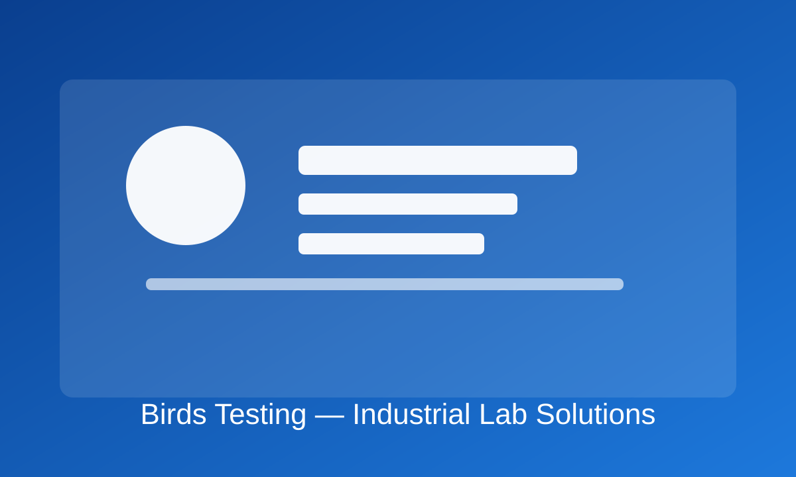

Compliance-Driven Selection
We recommend instruments based on your standards, throughput, and reporting requirements.
B2B Testing Partner
Birds Testing supports contractors, manufacturers, and independent testing institutions with dependable instruments, complete project delivery, and lifecycle service.

We recommend instruments based on your standards, throughput, and reporting requirements.
From installation to SOP guidance, we help operators achieve stable and repeatable results quickly.
Scheduled calibration and responsive support reduce downtime and protect data credibility.